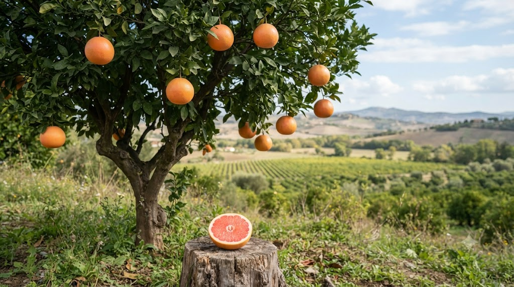

🌿 Jednodruhový olej
Pink Grapefruit · Citrus paradisi
Svěží a povzbuzující olej — rozjasňuje mysl, odlehčuje tělu i duši, pomáhá při hubnutí, detoxikaci a snižování stresu.

Vlastnosti: antioxidační · antimikrobiální · podporuje lymfu · detoxikační
Po nanesení na kůži se vyhněte slunci po dobu 12–24 hodin.
Vůně grapefruitu patří mezi nejvýzkumnější citrusové aroma — a není divu. Pomáhá zkrotit chuť k jídlu, rozjasnit náladu a rozproudit metabolismus.
Jako registrovaný zákazník získáte slevu až 50 % na vybrané produkty.
Informace na tomto webu mají výlučně informační charakter a nejsou náhradou odborné lékařské péče. · Odkazy vedou na partnerský e-shop Bewit.